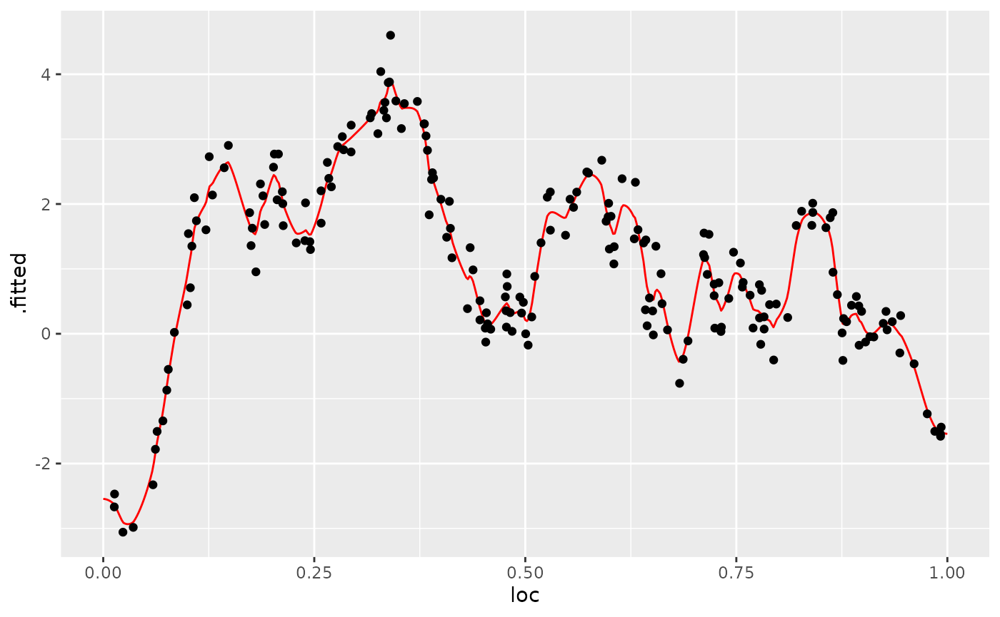

Rational approximation with the rSPDE package
David Bolin, Alexandre B. Simas, Zhen Xiong
Created: 2021-12-04. Last modified: 2024-10-06.
Source:vignettes/rspde_cov.Rmd
rspde_cov.RmdIntroduction
In this vignette we will introduce the covariance-based rational SPDE approach and illustrate how to perform statistical inference with it.
The covariance-based approach is an efficient alternative to the operator-based rational SPDE approach by Bolin and Kirchner (2020) which works when one has SPDE driven by Gaussian white noise. We refer the reader to Bolin, Simas, and Xiong (2023) for the theoretical details of the approach.
Details about the operator-based rational SPDE approach are given in
the Operator-based rational approximation
vignette. For the R-INLA and
inlabru implementations of the covariance-based rational
SPDE approach we refer the reader to the vignettes R-INLA implementation of the rational SPDE
approach and inlabru implementation of
the rational SPDE approach respectively.
Covariance-based rational SPDE approach
Let us first present the idea behind the approach. In the SPDE approach, introduced in Lindgren, Rue, and Lindström (2011) we model as the solution of the following SPDE: where and is the standard Gaussian white noise. Here, , and are the parameters of the model. In the standard SPDE approach, needs to be fixed to an integer value, where is the usual default value. In the rational SPDE approach we can use any value of and also estimate it from data.
The main idea of the covariance-based rational SPDE approach is to perform the rational approximation of the covariance operator . To this end, we begin by obtaining an approximation of the random field , which is the solution of the SPDE above, by using the finite element method (FEM): where are stochastic weights and are fixed piecewise linear and continuous basis functions obtained from a triangulation of the spatial domain. We then obtain a FEM approximation of the operator , which is given by , and the covariance operator of is given by .
Now, by using the rational approximation on , we can approximate covariance operator as where denotes the integer part of , is the order of rational approximation, and , with and being known coefficients obtained from a rational approximation of the function .
The next step is to perform a partial fraction decomposition of the rational function , which yields the representation Based on the above operator equation, we can write the covariance matrix of the stochastic weights , where , as where , , is the mass matrix, , , , is the stiffness matrix, and
The above representation shows that we can express as where , and is the precision matrix of , which is given by
We, then, replace the Matérn latent field by the latent vector given above, which has precision matrix given by We thus have a Markov approximation which can be used for computationally efficient inference. For example, assume that we observe where are iid measurement noise. Then, we have that This can be written in a matrix form as where , , and We then arrive at the following hierarchical model:
With these elements, we can, for example, use R-INLA to compute the
posterior distribution of the three parameters we want to estimate.
Constructing the approximation
In this section, we explain how to to use the function
matern.operators() with the default argument
type, that is, type="covariance", which is
constructs the covariance-based rational approximation. We will also
illustrate the usage of several methods and functions related to the
covariance-based rational approximation. We will use functions to sample
from Gaussian fields with stationary Matérn covariance function, compute
the log-likelihood function, and do spatial prediction.
The first step for performing the covariance-based rational SPDE
approximation is to define the FEM mesh. We will also illustrate how
spatial models can be constructed if the FEM implementation of the
fmesher package is used. When using the R-INLA package, we also
recommend the usage of our R-INLA implementation of
the rational SPDE approach. For more details, see the R-INLA implementation of the rational SPDE
approach vignette.
We begin by loading the rSPDE package:
Assume that we want to define a model on the interval . We then start by defining a vector with mesh nodes where the basis functions are centered.
s <- seq(from = 0, to = 1, length.out = 101)We can now use matern.operators() to construct a
rational SPDE approximation of order
for a Gaussian random field with a Matérn covariance function on the
interval. We also refer the reader to the Operator-based rational approximation for a
similar comparison made for the operator-based rational
approximation.
kappa <- 20
sigma <- 2
nu <- 0.8
r <- sqrt(8*nu)/kappa #range parameter
op_cov <- matern.operators(loc_mesh = s, nu = nu,
range = r, sigma = sigma, d = 1, m = 2, parameterization = "matern"
)The object op_cov contains the matrices needed for
evaluating the distribution of the stochastic weights
.
If we want to evaluate
at some locations
,
we need to multiply the weights with the basis functions
evaluated at the locations. For this, we can construct the observation
matrix
,
with elements
,
which links the FEM basis functions to the locations. This matrix can be
constructed using the function fm_basis() from the
fmesher package. However, as observed in the introduction
of this vignette, we have decomposed the stochastic weights
into a vector of latent variables. Thus, the
matrix for the covariance-based rational approximation, which we will
denote by
,
is actually given by the
-fold
horizontal concatenation of these
matrices, where
is the order of the rational approximation.
To evaluate the accuracy of the approximation, let us compute the
covariance function between the process at
and all other locations in s and compare with the true
Matérn covariance function. The covariances can be calculated by using
the cov_function_mesh() method.
c_cov.approx <- op_cov$cov_function_mesh(0.5)Let us now compute the true Matérn covariance function on the interval , which is the folded Matérn, see Theorem 1 in An explicit link between Gaussian fields and Gaussian Markov random fields: the stochastic partial differential equation approach for further details.
c.true <- folded.matern.covariance.1d(rep(0.5, length(s)),
abs(s), kappa, nu, sigma)The covariance function and the error compared with the Matérn covariance are shown in the following figure.
opar <- par(
mfrow = c(1, 2), mgp = c(1.3, 0.5, 0),
mar = c(2, 2, 0.5, 0.5) + 0.1
)
plot(s, c.true,
type = "l", ylab = "C(|s-0.5|)", xlab = "s", ylim = c(0, 5),
cex.main = 0.8, cex.axis = 0.8, cex.lab = 0.8
)
lines(s, c_cov.approx, col = 2)
legend("topright",
bty = "n",
legend = c("Matérn", "Rational"),
col = c("black", "red"),
lty = rep(1, 2), ncol = 1,
cex = 0.8
)
plot(s, c.true - c_cov.approx,
type = "l", ylab = "Error", xlab = "s",
cex.main = 0.8, cex.axis = 0.8, cex.lab = 0.8
)
par(opar)To improve the approximation we can increase the degree of the
polynomials, by increasing
,
and/or increase the number of basis functions used for the FEM
approximation. Let us, for example, compute the approximation with
using the same mesh, as well as the approximation when we increase the
number of basis functions and use
and
.
We will also load the fmesher package to use the
fm_basis() and fm_mesh_1d() functions to map
between the meshes.
library(fmesher)
op_cov2 <- matern.operators(
range = r, sigma = sigma, nu = nu,
loc_mesh = s, d = 1, m = 4,
parameterization = "matern"
)
c_cov.approx2 <- op_cov2$cov_function_mesh(0.5)
s2 <- seq(from = 0, to = 1, length.out = 501)
op_cov <- matern.operators(
range = r, sigma = sigma, nu = nu,
loc_mesh = s2, d = 1, m = 2,
parameterization = "matern"
)
mesh_s2 <- fm_mesh_1d(s2)
# Map the mesh s2 to s
A2 <- fm_basis(mesh_s2, s)
c_cov.approx3 <- A2 %*% op_cov$cov_function_mesh(0.5)
op_cov <- matern.operators(
range = r, sigma = sigma, nu = nu,
loc_mesh = s2, d = 1, m = 4,
parameterization = "matern"
)
c_cov.approx4 <- A2 %*% op_cov$cov_function_mesh(0.5)The resulting errors are shown in the following figure.
opar <- par(mgp = c(1.3, 0.5, 0), mar = c(2, 2, 0.5, 0.5) + 0.1)
plot(s, c.true - c_cov.approx,
type = "l", ylab = "Error", xlab = "s", col = 1,
cex.main = 0.8, cex.axis = 0.8, cex.lab = 0.8
)
lines(s, c.true - c_cov.approx2, col = 2)
lines(s, c.true - c_cov.approx3, col = 3)
lines(s, c.true - c_cov.approx4, col = 4)
legend("bottomright",
bty = "n",
legend = c("m=2 coarse mesh", "m=4 coarse mesh",
"m=2 fine mesh", "m=4 fine mesh"),
col = c(1, 2, 3, 4),
lty = rep(1, 2), ncol = 1,
cex = 0.8
)
par(opar)
Since the error induced by the rational approximation decreases exponentially in , there is in general rarely a need for an approximation with a large value of . This is good because the size of increases with , which makes the approximation more computationally costly to use. To illustrate this, let us compute the norm of the approximation error for different .
# Mapping s2 to s
A2 <- fm_basis(mesh_s2, s)
errors <- rep(0, 4)
for (i in 1:4) {
op_cov <- matern.operators(
range = r, sigma = sigma, nu = nu,
loc_mesh = s2, d = 1, m = i,
parameterization = "matern"
)
c_cov.approx <- A2 %*% op_cov$cov_function_mesh(0.5)
errors[i] <- norm(c.true - c_cov.approx)
}
print(errors)## [1] 0.977500618 0.086659189 0.017335545 0.008432137We see that the error decreases very fast when we increase from to , without any numerical instability. This is an advantage of the covariance-based rational approximation when compared to the operator-based rational approximation. See Operator-based rational approximation for details on the numerical instability of the operator-based rational approximation.
Using the approximation
When we use the function matern.operators(), we can
simulate from the model using the simulate() method. To
such an end we simply apply the simulate() method to the
object returned by the matern.operators() function:
u <- simulate(op_cov)If we want replicates, we simply set the argument nsim
to the desired number of replicates. For instance, to generate two
replicates of the model, we simply do:
u.rep <- simulate(op_cov, nsim = 2)Fitting a model
There is built-in support for computing log-likelihood functions and
performing kriging prediction in the rSPDE package. To
illustrate this, we use the simulation to create some noisy observations
of the process. For this, we first construct the observation matrix
linking the FEM basis functions to the locations where we want to
simulate. We first randomly generate some observation locations and then
construct the matrix.
set.seed(1)
s <- seq(from = 0, to = 1, length.out = 501)
n.obs <- 200
obs.loc <- runif(n.obs)
mesh_s <- fm_mesh_1d(s)
A <- fm_basis(x = mesh_s, loc = obs.loc)We now generate the observations as , where is Gaussian measurement noise, is a covariate giving the observation location. We will assume that the latent process has a Matérn covariance with and :
kappa <- 20
sigma <- 1.3
nu <- 0.8
r <- sqrt(8*nu)/kappa
op_cov <- matern.operators(
loc_mesh = s, nu = nu,
range = r, sigma = sigma, d = 1, m = 2,
parameterization = "matern"
)
u <- simulate(op_cov)
sigma.e <- 0.3
x1 <- obs.loc
Y <- 2 - x1 + as.vector(A %*% u + sigma.e * rnorm(n.obs))
df_data <- data.frame(y = Y, loc = obs.loc, x1 = x1)Let us create a new object to fit the model:
op_cov_est <- matern.operators(
loc_mesh = s, d = 1, m = 2
)Let us now fit the model. To this end we will use the
rspde_lme() function:
fit <- rspde_lme(y~x1, model = op_cov_est,
data = df_data, loc = "loc")We can get a summary of the fit with the summary()
method:
summary(fit)##
## Latent model - Whittle-Matern
##
## Call:
## rspde_lme(formula = y ~ x1, loc = "loc", data = df_data, model = op_cov_est)
##
## Fixed effects:
## Estimate Std.error z-value Pr(>|z|)
## (Intercept) 1.2977 1.1935 1.087 0.277
## x1 -0.5586 2.0517 -0.272 0.785
##
## Random effects:
## Estimate Std.error z-value
## alpha 1.342557 0.053412 25.136
## tau 0.038168 0.009482 4.025
## kappa 16.477711 5.252625 3.137
##
## Random effects (Matern parameterization):
## Estimate Std.error z-value
## nu 0.84256 0.05341 15.775
## sigma 1.47083 0.31851 4.618
## range 0.15756 0.04912 3.208
##
## Measurement error:
## Estimate Std.error z-value
## std. dev 0.33075 0.02231 14.83
## ---
## Signif. codes: 0 '***' 0.001 '**' 0.01 '*' 0.05 '.' 0.1 ' ' 1
##
## Log-Likelihood: -145.9036
## Number of function calls by 'optim' = 111
## Optimization method used in 'optim' = L-BFGS-B
##
## Time used to: fit the model = 22.83868 secsLet us compare the parameters of the latent model:
print(data.frame(
sigma = c(sigma, fit$matern_coeff$random_effects[2]),
range = c(r, fit$matern_coeff$random_effects[3]),
nu = c(nu, fit$matern_coeff$random_effects[1]),
row.names = c("Truth", "Estimates")
))## sigma range nu
## Truth 1.300000 0.1264911 0.8000000
## Estimates 1.470833 0.1575606 0.8425568
# Total time
print(fit$fitting_time)## Time difference of 22.83868 secsLet us take a glance at the fit:
glance(fit)## # A tibble: 1 × 9
## nobs sigma logLik AIC BIC deviance df.residual model alpha
## <int> <dbl> <dbl> <dbl> <dbl> <dbl> <dbl> <chr> <dbl>
## 1 200 0.331 -146. 304. 324. 292. 194 Covariance-Based Ma… 1.34We can also speed up the optimization by setting
parallel=TRUE (which uses implicitly the
optimParallel function):
fit_par <- rspde_lme(y~x1, model = op_cov_est,
data = df_data, loc = "loc", parallel = TRUE)Here is the summary:
summary(fit_par)##
## Latent model - Whittle-Matern
##
## Call:
## rspde_lme(formula = y ~ x1, loc = "loc", data = df_data, model = op_cov_est,
## parallel = TRUE)
##
## Fixed effects:
## Estimate Std.error z-value Pr(>|z|)
## (Intercept) 1.2977 1.1935 1.087 0.277
## x1 -0.5586 2.0517 -0.272 0.785
##
## Random effects:
## Estimate Std.error z-value
## alpha 1.342557 0.053412 25.136
## tau 0.038168 0.009482 4.025
## kappa 16.477711 5.252625 3.137
##
## Random effects (Matern parameterization):
## Estimate Std.error z-value
## nu 0.84256 0.05341 15.775
## sigma 1.47083 0.31851 4.618
## range 0.15756 0.04912 3.208
##
## Measurement error:
## Estimate Std.error z-value
## std. dev 0.33075 0.02231 14.83
## ---
## Signif. codes: 0 '***' 0.001 '**' 0.01 '*' 0.05 '.' 0.1 ' ' 1
##
## Log-Likelihood: -145.9036
## Number of function calls by 'optim' = 111
## Optimization method used in 'optim' = L-BFGS-B
##
## Time used to: fit the model = 15.28355 secs
## set up the parallelization = 2.45385 secsLet us compare with the true values and compare the time:
print(data.frame(
sigma = c(sigma, fit_par$matern_coeff$random_effects[2]),
range = c(r, fit_par$matern_coeff$random_effects[3]),
nu = c(nu, fit_par$matern_coeff$random_effects[1]),
row.names = c("Truth", "Estimates")
))## sigma range nu
## Truth 1.300000 0.1264911 0.8000000
## Estimates 1.470833 0.1575606 0.8425568
# Total time (time to fit plus time to set up the parallelization)
total_time <- fit_par$fitting_time + fit_par$time_par
print(total_time)## Time difference of 17.73741 secsKriging
Finally, we compute the kriging prediction of the process
at the locations in s based on these observations.
Let us create the data.frame with locations in which we
want to obtain the predictions. Observe that we also must provide the
values of the covariates.
df_pred <- data.frame(loc = s, x1 = s)We can now perform kriging with the predict()
method:
u.krig <- predict(fit, newdata = df_pred, loc = "loc")The simulated process, the observed data, and the kriging prediction are shown in the following figure.
opar <- par(mgp = c(1.3, 0.5, 0), mar = c(2, 2, 0.5, 0.5) + 0.1)
plot(obs.loc, Y,
ylab = "u(s)", xlab = "s",
ylim = c(min(c(min(u), min(Y))), max(c(max(u), max(Y)))),
cex.main = 0.8, cex.axis = 0.8, cex.lab = 0.8
)
lines(s, u.krig$mean, col = 2)
par(opar)We can also use the augment() function and pipe the
results into a plot:
library(ggplot2)
library(dplyr)
augment(fit, newdata = df_pred, loc = "loc") %>% ggplot() +
aes(x = loc, y = .fitted) +
geom_line(col="red") +
geom_point(data = df_data, aes(x = loc, y=Y))
Fitting a model with replicates
Let us illustrate how to simulate a dataset with replicates and then
fit a model to such data. Recall that to simulate a latent model with
replicates, all we do is set the nsim argument to the
number of replicates.
We will use the CBrSPDEobj object (returned from the
matern.operators() function) from the previous example,
namely op_cov.
Now, let us generate the observed values :
Note that
is a matrix with 20 columns, each column containing one replicate. We
need to turn y into a vector and create an auxiliary vector
repl indexing the replicates of y:
y_vec <- as.vector(Y.rep)
repl <- rep(1:n.rep, each = n.obs)
df_data_repl <- data.frame(y = y_vec, loc = rep(obs.loc, n.rep))We can now fit the model in the same way as before by using the
rspde_lme() function:
fit_repl <- rspde_lme(y_vec ~ -1, model = op_cov_est, repl = repl,
data = df_data_repl, loc = "loc", parallel = TRUE)## Warning in rspde_lme(y_vec ~ -1, model = op_cov_est, repl = repl, data =
## df_data_repl, : The optimization failed to provide a numerically
## positive-definite Hessian. You can try to obtain a positive-definite Hessian by
## setting 'improve_hessian' to TRUE or by setting 'parallel' to FALSE, which
## allows other optimization methods to be used.## Warning in sqrt(diag(inv_fisher)): NaNs producedLet us see a summary of the fit:
summary(fit_repl)##
## Latent model - Whittle-Matern
##
## Call:
## rspde_lme(formula = y_vec ~ -1, loc = "loc", data = df_data_repl,
## model = op_cov_est, repl = repl, parallel = TRUE)##
## No fixed effects.##
## Random effects:
## Estimate Std.error z-value
## alpha 1.28321 NaN NaN
## tau 0.04583 NaN NaN
## kappa 20.01370 NaN NaN
##
## Random effects (Matern parameterization):
## Estimate Std.error z-value
## nu 0.783209 NaN NaN
## sigma 1.271305 0.052037 24.43
## range 0.125071 0.007832 15.97
##
## Measurement error:
## Estimate Std.error z-value
## std. dev 0.302680 0.004417 68.52
## ---
## Signif. codes: 0 '***' 0.001 '**' 0.01 '*' 0.05 '.' 0.1 ' ' 1
##
## Log-Likelihood: -2758.186
## Number of function calls by 'optim' = 34
## Optimization method used in 'optim' = L-BFGS-B
##
## Time used to: fit the model = 14.41901 secs
## set up the parallelization = 2.5052 secsand glance:
glance(fit_repl)## # A tibble: 1 × 9
## nobs sigma logLik AIC BIC deviance df.residual model alpha
## <int> <dbl> <dbl> <dbl> <dbl> <dbl> <dbl> <chr> <dbl>
## 1 4000 0.303 -2758. 5524. 5550. 5516. 3996 Covariance-Based Ma… 1.28Let us compare with the true values:
print(data.frame(
sigma = c(sigma, fit_repl$matern_coeff$random_effects[2]),
range = c(r, fit_repl$matern_coeff$random_effects[3]),
nu = c(nu, fit_repl$matern_coeff$random_effects[1]),
row.names = c("Truth", "Estimates")
))## sigma range nu
## Truth 1.300000 0.1264911 0.8000000
## Estimates 1.271305 0.1250709 0.7832089
# Total time
print(fit_repl$fitting_time)## Time difference of 14.41901 secsWe can obtain better estimates of the Hessian by setting
improve_hessian to TRUE, however this might
make the process take longer:
fit_repl2 <- rspde_lme(y_vec ~ -1, model = op_cov_est, repl = repl,
data = df_data_repl, loc = "loc", parallel = TRUE,
improve_hessian = TRUE)Let us get a summary:
summary(fit_repl2)##
## Latent model - Whittle-Matern
##
## Call:
## rspde_lme(formula = y_vec ~ -1, loc = "loc", data = df_data_repl,
## model = op_cov_est, repl = repl, parallel = TRUE, improve_hessian = TRUE)##
## No fixed effects.##
## Random effects:
## Estimate Std.error z-value
## alpha 1.283209 0.013648 94.02
## tau 0.045834 0.003324 13.79
## kappa 20.013699 1.369621 14.61
##
## Random effects (Matern parameterization):
## Estimate Std.error z-value
## nu 0.783209 0.013648 57.39
## sigma 1.271305 0.052038 24.43
## range 0.125071 0.007832 15.97
##
## Measurement error:
## Estimate Std.error z-value
## std. dev 0.302680 0.004949 61.16
## ---
## Signif. codes: 0 '***' 0.001 '**' 0.01 '*' 0.05 '.' 0.1 ' ' 1
##
## Log-Likelihood: -2758.186
## Number of function calls by 'optim' = 34
## Optimization method used in 'optim' = L-BFGS-B
##
## Time used to: fit the model = 11.78098 secs
## compute the Hessian = 6.47201 secs
## set up the parallelization = 2.54947 secsSpatial data and parameter estimation
The functions used in the previous examples also work for spatial
models. We then need to construct a mesh over the domain of interest and
then compute the matrices needed to define the operator. These tasks can
be performed, for example, using the fmesher package. Let
us start by defining a mesh over
and compute the mass and stiffness matrices for that mesh.
We consider a simple Gaussian linear model with 30 independent replicates of a latent spatial field , observed at the same locations, , for each replicate. For each we have
where are iid normally distributed with mean 0 and standard deviation 0.1.
Let us create the FEM mesh:
n_loc <- 500
loc_2d_mesh <- matrix(runif(n_loc * 2), n_loc, 2)
mesh_2d <- fm_mesh_2d(
loc = loc_2d_mesh,
cutoff = 0.05,
offset = c(0.1, 0.4),
max.edge = c(0.05, 0.5)
)
plot(mesh_2d, main = "")
points(loc_2d_mesh[, 1], loc_2d_mesh[, 2])We can now use this mesh to define a rational SPDE approximation of
order
for a Matérn model in the same fashion as we did above in the
one-dimensional case. We now simulate a latent process with standard
deviation
and range
.
We will use
so that the model has an exponential covariance function. To this end we
create a model object with the matern.operators()
function:
nu <- 0.7
sigma <- 1.3
range <- 0.15
d <- 2
op_cov_2d <- matern.operators(
mesh = mesh_2d,
nu = nu,
range = range,
sigma = sigma,
m = 2,
parameterization = "matern"
)
tau <- op_cov_2d$tauNow let us simulate some noisy data that we will use to estimate the
parameters of the model. To construct the observation matrix, we use the
function fm_basis() from the fmesher package.
Recall that we will simulate the data with 30 replicates.
n.rep <- 30
u <- simulate(op_cov_2d, nsim = n.rep)
A <- fm_basis(
x = mesh_2d,
loc = loc_2d_mesh
)
sigma.e <- 0.1
Y <- A %*% u + matrix(rnorm(n_loc * n.rep), ncol = n.rep) * sigma.eThe first replicate of the simulated random field as well as the observation locations are shown in the following figure.
library(viridis)
library(ggplot2)
proj <- fm_evaluator(mesh_2d, dims = c(70, 70))
df_field <- data.frame(x = proj$lattice$loc[,1],
y = proj$lattice$loc[,2],
field = as.vector(fm_evaluate(proj,
field = as.vector(u[, 1]))),
type = "field")
df_loc <- data.frame(x = loc_2d_mesh[, 1],
y = loc_2d_mesh[, 2],
field = as.vector(Y[,1]),
type = "locations")
df_plot <- rbind(df_field, df_loc)
ggplot(df_plot) + aes(x = x, y = y, fill = field) +
facet_wrap(~type) + xlim(0,1) + ylim(0,1) +
geom_raster(data = df_field) +
geom_point(data = df_loc, aes(colour = field),
show.legend = FALSE) +
scale_fill_viridis() + scale_colour_viridis()Let us now create a new object to fit the model:
op_cov_2d_est <- matern.operators(
mesh = mesh_2d,
m = 2
)We can now proceed as in the previous cases. We set up a vector with
the response variables and create an auxiliary replicates vector,
repl, that contains the indexes of the replicates of each
observation, and then we fit the model:
y_vec <- as.vector(Y)
repl <- rep(1:n.rep, each = n_loc)
df_data_2d <- data.frame(y = y_vec, x_coord = loc_2d_mesh[,1],
y_coord = loc_2d_mesh[,2])
fit_2d <- rspde_lme(y ~ -1, model = op_cov_2d_est,
data = df_data_2d, repl = repl,
loc = c("x_coord", "y_coord"), parallel = TRUE)Let us get a summary:
summary(fit_2d)##
## Latent model - Whittle-Matern
##
## Call:
## rspde_lme(formula = y ~ -1, loc = c("x_coord", "y_coord"), data = df_data_2d,
## model = op_cov_2d_est, repl = repl, parallel = TRUE)##
## No fixed effects.##
## Random effects:
## Estimate Std.error z-value
## alpha 1.52782 0.04909 31.123
## tau 0.07302 0.01346 5.423
## kappa 13.13775 0.80390 16.342
##
## Random effects (Matern parameterization):
## Estimate Std.error z-value
## nu 0.527816 0.049090 10.75
## sigma 1.365723 0.014512 94.11
## range 0.156410 0.005158 30.32
##
## Measurement error:
## Estimate Std.error z-value
## std. dev 0.1003218 0.0008777 114.3
## ---
## Signif. codes: 0 '***' 0.001 '**' 0.01 '*' 0.05 '.' 0.1 ' ' 1
##
## Log-Likelihood: -5659.535
## Number of function calls by 'optim' = 40
## Optimization method used in 'optim' = L-BFGS-B
##
## Time used to: fit the model = 1.71085 mins
## set up the parallelization = 4.85739 secsand glance:
glance(fit_2d)## # A tibble: 1 × 9
## nobs sigma logLik AIC BIC deviance df.residual model alpha
## <int> <dbl> <dbl> <dbl> <dbl> <dbl> <dbl> <chr> <dbl>
## 1 15000 0.100 -5660. 11327. 11358. 11319. 14996 Covariance-Based … 1.53Let us compare the estimated results with the true values:
print(data.frame(
sigma = c(sigma, fit_2d$matern_coeff$random_effects[2]),
range = c(range, fit_2d$matern_coeff$random_effects[3]),
nu = c(nu, fit_2d$matern_coeff$random_effects[1]),
row.names = c("Truth", "Estimates")
))## sigma range nu
## Truth 1.300000 0.1500000 0.7000000
## Estimates 1.365723 0.1564103 0.5278161
# Total time
print(fit_2d$fitting_time)## Time difference of 1.710854 minsLet us now plot the prediction for replicate 3 by using the
augment function. We begin by creating the
data.frame we want to do prediction:
df_pred <- data.frame(x = proj$lattice$loc[,1],
y = proj$lattice$loc[,2])
augment(fit_2d, newdata = df_pred, loc = c("x","y"), which_repl = 3) %>% ggplot() +
geom_raster(aes(x=x, y=y, fill = .fitted)) + xlim(0,1) + ylim(0,1) +
scale_fill_viridis()## Warning: Removed 3744 rows containing missing values or values outside the scale range
## (`geom_raster()`).An example with a non-stationary model
Our goal now is to show how one can fit model with non-stationary (std. deviation) and non-stationary (a range parameter). One can also use the parameterization in terms of non-stationary SPDE parameters and .
For this example we will consider simulated data.
Simulating the data
Let us consider a simple Gaussian linear model with a latent spatial field , defined on the rectangle , where the std. deviation and range parameter satisfy the following log-linear regressions: where . We assume the data is observed at locations, . For each we have
where are iid normally distributed with mean 0 and standard deviation 0.1.
We begin by defining the domain and creating the mesh:
rec_domain <- cbind(c(0, 1, 1, 0, 0) * 10, c(0, 0, 1, 1, 0) * 5)
mesh <- fm_mesh_2d(loc.domain = rec_domain, cutoff = 0.1,
max.edge = c(0.5, 1.5), offset = c(0.5, 1.5))We follow the same structure as INLA. However,
INLA only allows one to specify B.tau and
B.kappa matrices, and, in INLA, if one wants
to parameterize in terms of range and standard deviation one needs to do
it manually. Here we provide the option to directly provide the matrices
B.sigma and B.range.
The usage of the matrices B.tau and B.kappa
are identical to the corresponding ones in
inla.spde2.matern() function. The matrices
B.sigma and B.range work in the same way, but
they parameterize the stardard deviation and range, respectively.
The columns of the B matrices correspond to the same
parameter. The first column does not have any parameter to be estimated,
it is a constant column.
So, for instance, if one wants to share a parameter with both
sigma and range (or with both tau
and kappa), one simply let the corresponding column to be
nonzero on both B.sigma and B.range (or on
B.tau and B.kappa).
We will assume
,
and
.
Let us now build the model with the spde.matern.operators()
function:
nu <- 0.8
true_theta <- c(0,1, 1)
B.sigma = cbind(0, 1, 0, (mesh$loc[,1] - 5) / 10)
B.range = cbind(0, 0, 1, (mesh$loc[,1] - 5) / 10)
alpha <- nu + 1 # nu + d/2 ; d = 2
# SPDE model
op_cov_ns <- spde.matern.operators(mesh = mesh,
theta = true_theta,
nu = nu,
B.sigma = B.sigma,
B.range = B.range,
parameterization = "matern")Let us now sample the data with the simulate()
method:
Let us now obtain 600 random locations on the rectangle and compute the matrix:
We can now generate the response vector y:
Let us now create the object to fit the data:
op_cov_ns_est <- op_cov_ns <- spde.matern.operators(mesh = mesh,
B.sigma = B.sigma,
B.range = B.range,
parameterization = "matern")Let us also create the data.frame() that contains the
data and the locations:
df_data_ns <- data.frame(y= y, x_coord = loc_mesh[,1], y_coord = loc_mesh[,2])Fitting the non-stationary rSPDE model
fit_ns <- rspde_lme(y ~ -1, model = op_cov_ns_est,
data = df_data_ns, loc = c("x_coord", "y_coord"),
parallel = TRUE)Let us get the summary:
summary(fit_ns)##
## Latent model - Generalized Whittle-Matern
##
## Call:
## rspde_lme(formula = y ~ -1, loc = c("x_coord", "y_coord"), data = df_data_ns,
## model = op_cov_ns_est, parallel = TRUE)##
## No fixed effects.##
## Random effects:
## Estimate Std.error z-value
## alpha 1.89706 0.06386 29.705
## Theta 1 -0.29625 0.15621 -1.897
## Theta 2 0.90944 0.23431 3.881
## Theta 3 1.90932 0.40437 4.722
##
## Measurement error:
## Estimate Std.error z-value
## std. dev 0.10194 0.05288 1.928
## ---
## Signif. codes: 0 '***' 0.001 '**' 0.01 '*' 0.05 '.' 0.1 ' ' 1
##
## Log-Likelihood: -89.47917
## Number of function calls by 'optim' = 93
## Optimization method used in 'optim' = L-BFGS-B
##
## Time used to: fit the model = 11.11663 secs
## set up the parallelization = 2.59349 secsLet us now compare with the true values:
print(data.frame(
theta1 = c(true_theta[1], fit_ns$coeff$random_effects[2]),
theta2 = c(true_theta[2], fit_ns$coeff$random_effects[3]),
theta3 = c(true_theta[3], fit_ns$coeff$random_effects[4]),
alpha = c(alpha, fit_ns$coeff$random_effects[1])),
row.names = c("Truth", "Estimates")
)## theta1 theta2 theta3 alpha
## Truth 0.0000000 1.0000000 1.000000 1.800000
## Estimates -0.2962479 0.9094445 1.909317 1.897063Changing the type and the order of the rational approximation
We have three rational approximations available. The BRASIL algorithm Hofreither (2021), and two “versions†of the Clenshaw-Lord Chebyshev-Pade algorithm, one with lower bound zero and another with the lower bound given in Bolin, Simas, and Xiong (2023).
The type of rational approximation can be chosen by setting the
type_rational_approximation argument in the
matern.operators function. The BRASIL algorithm corresponds
to the choice brasil, the Clenshaw-Lord Chebyshev pade with
zero lower bound and non-zero lower bounds are given, respectively, by
the choices chebfun and chebfunLB.
For instance, we can create an rSPDE object with a
chebfunLB rational approximation by
op_cov_2d_type <- matern.operators(
mesh = mesh_2d,
m = 2,
type_rational_approximation = "chebfunLB"
)
tau <- op_cov_2d_type$tauWe can check the order of the rational approximation with the
rational.order() function and assign a new order with the
rational.order<-() function:
rational.order(op_cov_2d_type)## [1] 2
rational.order(op_cov_2d_type) <- 1Let us fit a model using the data from the previous example:
fit_order1 <- rspde_lme(y ~ -1, model = op_cov_2d_type,
data = df_data_2d,repl = repl,
loc = c("x_coord", "y_coord"), parallel = TRUE)
summary(fit_order1)##
## Latent model - Whittle-Matern
##
## Call:
## rspde_lme(formula = y ~ -1, loc = c("x_coord", "y_coord"), data = df_data_2d,
## model = op_cov_2d_type, repl = repl, parallel = TRUE)##
## No fixed effects.##
## Random effects:
## Estimate Std.error z-value
## alpha 1.51696 0.04769 31.807
## tau 0.07206 0.01281 5.626
## kappa 13.98082 0.75501 18.517
##
## Random effects (Matern parameterization):
## Estimate Std.error z-value
## nu 0.516958 0.047693 10.84
## sigma 1.392506 0.014772 94.27
## range 0.145459 0.004507 32.27
##
## Measurement error:
## Estimate Std.error z-value
## std. dev 0.1003733 0.0008786 114.2
## ---
## Signif. codes: 0 '***' 0.001 '**' 0.01 '*' 0.05 '.' 0.1 ' ' 1
##
## Log-Likelihood: -5658.37
## Number of function calls by 'optim' = 30
## Optimization method used in 'optim' = L-BFGS-B
##
## Time used to: fit the model = 33.40777 secs
## set up the parallelization = 4.91648 secsLet us compare with the true values:
print(data.frame(
sigma = c(sigma, fit_order1$matern_coeff$random_effects[2]),
range = c(range, fit_order1$matern_coeff$random_effects[3]),
nu = c(nu, fit_order1$matern_coeff$random_effects[1]),
row.names = c("Truth", "Estimates")
))## sigma range nu
## Truth 1.300000 0.1500000 0.8000000
## Estimates 1.392506 0.1454587 0.5169575Finally, we can check the type of rational approximation with the
rational.type() function and assign a new type by using the
rational.type<-() function:
rational.type(op_cov_2d_type)## [1] "chebfunLB"
rational.type(op_cov_2d_type) <- "brasil"Let us now fit this model, with the data from the previous example,
with brasil rational approximation:
fit_brasil <- rspde_lme(y ~ -1, model = op_cov_2d_type,
data = df_data_2d,repl = repl,
loc = c("x_coord", "y_coord"), parallel = TRUE)## Warning in rspde_lme(y ~ -1, model = op_cov_2d_type, data = df_data_2d, : The
## optimization failed to provide a numerically positive-definite Hessian. You can
## try to obtain a positive-definite Hessian by setting 'improve_hessian' to TRUE
## or by setting 'parallel' to FALSE, which allows other optimization methods to
## be used.## Warning in sqrt(diag(inv_fisher)): NaNs produced
summary(fit_brasil)##
## Latent model - Whittle-Matern
##
## Call:
## rspde_lme(formula = y ~ -1, loc = c("x_coord", "y_coord"), data = df_data_2d,
## model = op_cov_2d_type, repl = repl, parallel = TRUE)##
## No fixed effects.##
## Random effects:
## Estimate Std.error z-value
## alpha 1.49502 NaN NaN
## tau 0.08003 NaN NaN
## kappa 13.61506 NaN NaN
##
## Random effects (Matern parameterization):
## Estimate Std.error z-value
## nu 0.495016 NaN NaN
## sigma 1.375559 0.014745 93.29
## range 0.146162 0.004105 35.61
##
## Measurement error:
## Estimate Std.error z-value
## std. dev 0.100338 0.000878 114.3
## ---
## Signif. codes: 0 '***' 0.001 '**' 0.01 '*' 0.05 '.' 0.1 ' ' 1
##
## Log-Likelihood: -5658.827
## Number of function calls by 'optim' = 63
## Optimization method used in 'optim' = L-BFGS-B
##
## Time used to: fit the model = 1.0035 mins
## set up the parallelization = 5.02511 secsLet us compare with the true values:
print(data.frame(
sigma = c(sigma, fit_brasil$matern_coeff$random_effects[2]),
range = c(range, fit_brasil$matern_coeff$random_effects[3]),
nu = c(nu, fit_brasil$matern_coeff$random_effects[1]),
row.names = c("Truth", "Estimates")
))## sigma range nu
## Truth 1.300000 0.1500000 0.8000000
## Estimates 1.375559 0.1461621 0.4950159